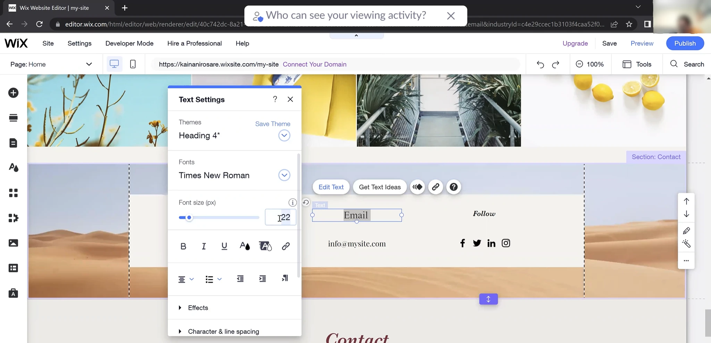

UX Projects
Wix Field Observation

Initial Observations
1.1 Initial Field Observations
The participant for my initial field observation was a first-time user of Wix. It was conducted in person on October 21, 2022, at 7:25 PM. The participant is a 22-year-old and current female RIT student studying Human-Centered Computing from Pennsylvania, United States. They presented their laptop in front of me, and I watched them create a website of their choosing while I took notes on my computer. This observation lasted around 15 minutes, from setting up their account to publishing their website.
Below are my raw observation notes on how they proceeded to use Wix. The participant was prompted to create a website of their choosing. Also, to speak through their thoughts if there was anything to comment upon. The italicized bullet points are comments made during the process:
- “It's making me choose a lot [Wix presets to create a website] of things up front”
- Browsed through various contents on the page (projects)
- Confusion about adding projects to their portfolio website
- Unable/hard to fit how to edit their site, but sees 6 projects they can edit
- “I am not a fan of the usability. It's not clear where you need to go to first. But it has good layouts… [I think I] would have spent a long time without any help”
- “I like all the different elements on the page”
- Frustration when the project view brings you to a new page
- Cannot put description under images (It seems they want to put alternative text for) - seems to not like this limitation
- “I like the animations that it can give”
- “[It] does give a good layout”
- “It gives limited capabilities for designing”
- “I think it's good for people who know nothing about designing a layout”
- Clicking through the different elements and content within
- Browses through all the font choices
- “There are a lot of font choices to choose from”
- “If they know what they are doing, then they might be fine”
- “They have many good presets, but it is not clear on what to do”
- “There should be clear to switch between dashboard and actual editing”
- “The 'Edit Site' button is so small; I could barely find it”
- “Its good for people who need help, but they may need to watch a tutorial”
- Finished with editing, publishing, and viewing their website
1.2 Observation Summary
For my field observation, I had a first-time user of Wix but have a coding and design background. The participant was prompted to create an account and then publish their website when done. For the first few parts, when creating their website, they quickly choose what type of site they would like to build with the various themes, layouts, and other prompts. After going through all these presets, it took them a while to find out how to edit their site. They explored how to create their website. The participant ended up spending quite a bit of their time trying to be able to view the page. However, in the end, I ended up pointing out where they could edit since they said it was too small to notice. They had quite a few frustrations during this: editing the actual website, trying to add subtext to an image, and project view page. During this, they either tried to spend time looking around to see how to proceed further or ended up giving up since it did not seem possible. Overall, it seems the participant had mixed reactions when using Wix. Upon recommendation for others, they mentioned it would depend on who they were. For example, those who do not have a background in design and code experience can use it, but they may need to follow a tutorial in case they get lost. The participant mentioned the various things to choose from, such as fonts, presets, and templates. Due to their background, they would stick to creating their website since it lets others know they can code and design and allows for creativity.
1.3 Research Questions
Based on my initial observations, it made me start thinking on possible research question our team could investigate:
- How user-friendly is the Wix website?
- Are there specific features that stand-out to users?
- Is there additional information needed to create a website on your own?
- Do users prefer using templates or creating from scratch?
- Are users able to create their website in minimal steps without any confusion?
Group Work
2.1 Summary
Over the years, there have been many website creation platforms to help build for professional, student, business use and more. There are many individuals who might be interested in using these types of sites. For example - business owners might try to build a website using such platforms as it does not require much prior knowledge and designers might want to use aesthetic templates that are readily available for quick use. With many different types of website creation platforms, we want to assess if these websites are helpful to audiences through its user-friendliness and intuitivity without creating many limitations. Therefore, for this assignment, we have chosen to evaluate the usability of Wix as a website building platform for first-time users and non-coders.
There are numerous website building platforms on the internet today that have been making it easy for people to build websites very quickly and easily. These include Squarespace, Webflow, WordPress, Wix, and many others. The reason why individuals use Wix is due to the ease of use for beginners, template variations, and various features and add-ons. This platform also allows people to build a website for both web and mobile layouts, which is very useful as much of the population in today's world is a mobile user, making it advantageous for individuals to have a mobile variation of their website. We wanted to evaluate and confirm if Wix promotes the information it entails to its customers and if it is up to standard for ease of use. In our field observation, we want to see if non-coders and first-time Wix users can easily create a website with as much creativity as possible. We also wanted to assess how much flexibility Wix allows its users when creating a website through its platform. This was done by asking the users to create a web page on Wix and observing them thoroughly during the process.
Initially, each of us conducted a field observation with one participant that provided us with an insight of non-coders' use of the Wix platform through their struggles, preferences, ease of finding items on the platform, and comparison to other experiences. To further investigate the intuitiveness, usability, and to confirm our field observations, each group member conducted a data collection session individually with another participant. To conduct this effectively, we broke up our analysis into two parts. First, we prompted the individual with various tasks and then followed up with a few interview questions that would help us understand their problems, what they thought was easy to find or use and the platform and how their overall experience was. The data collected also helped to answer our research questions as we collected in-depth information about the usage of the platform.
2.2 Research Questions
With this work, we are trying to answer the following research questions:
- RQ1: What features in Wix are user-friendly to non-coders?
- RQ2: How quickly can users (specifically, non-coders) create a personal, non-commercial website by using Wix?
- RQ3: Do users prefer using a template over creating a website from scratch?
2.3 Task Walkthrough
The following tasks were selected to examine the user's actions and asked to speak out loud of their thoughts:
- Create a site by choosing a template - Creative CV/Portfolio
- Create a new section
- Change the text to briefly write an introduction paragraph about yourself
- Change the image to insert your own
- Create a new section to insert a contact form on the website
- Change the heading font to 'Times New Roman' and at 32 px
- Change the current site theme colors
- Create a new section - a footer on the website
- Add your social links to the footer
- Publish your website and share your link
2.4 Interview Questions
The following questions were selected based on multiple team meetings. They were presented to the user upon completing the usability tasks:
- Do you have any prior experience building a website from a website building platform?
- What was the most struggling part when you were using Wix?
- What part of the experience did you find easy while you were building the website?
- Do you prefer using a template rather than building a website from scratch?
Individual Conducted Interviews and Reported Interviews
3.1 Background
The interview section was conducted and recorded over Zoom with another individual. This individual was a recent graduate who studied Chemistry at UH Manoa. She currently resides in California, United States, and is 23 years old. This interview was on October 23, 2022, at 9:30 PM EST. The interview lasted about 17 minutes, from setting up their account to answering interview questions.
3.2 Task Walkthrough
The participant was asked to complete ten usability tasks, which can be found in Section 2.3 (Task Walk Through). After creating their account, they were to build a Creative CV or Portfolio site as a template. Once they were on the website, the participant was to create sections, change an image, change text font and size, theme colors, and add text. For one of the tasks, the participant were to change the current text to Times New Roman at 32px. All tasks were to see if users can easily navigate through the website to prove its user-friendliness and observe the different features available. After the tasks walk-through, the participant had four follow-up questions about the website seen in 3.5 (Interview Questions Response).
3.3 List of Problems
There were not many problems with both the observation and interview process. However, below are a list of problems that happened during either the observation or interview.
Observation
- Once the participant set up their account, they did not know how to edit their site upon creating their account.
- Felt that it makes you choose a lot of things upfront.
- Mentioned the 'Edit Site' button was too small to notice. Which I had to help point out.
- Trying to edit a project view brings you to a new page, which felt a limitation to the participant.
Interview
- Missed that you can add a section if you hover in between sections.
- Did not properly change an image; however, it was due to confusion when prompted with the task.
There were not many problems with the interview participant compared to the observation participant. It is due to the observation individual explored many features and had no guidance. Whereas with the interview, the participant restricts to only adding certain things to the page. Therefore, there were not many problems to be found with them. Another partial reason is trying to keep the interview process not as long.
Both participants took some time to navigate to the actual site editor. They both quickly adapted to the different features that add to the website. So, if they wanted to add a new section with a particular layout, both participants successfully added it. Another point was when both participants finished. They mentioned website building platforms are a good starter for those who do not know design and coding. There are many things to choose from; however, this leads to a limitation on creativity. In the end, the observation participant would not use it since they would prefer to code theirs. Meanwhile, the interviewee participant would likely not use it again since they have no reason to.
3.4 Answering the Research Questions
RQ1: What features in Wix are user-friendly to non-coders (and first-time users)?
The observed participant from the start mentioned how the website was not user-friendly and had poor usability. Many things prompted them in the beginning to create the site; however, it brought them to the site information and website editor, which they could not find without obtaining help. While designing the website, they complemented Wix by having many options and the capability to see it in a mobile view. The participant mentioned one does not need to worry about media queries with this feature. Some features they thought were user-friendly were the various fonts and animations to choose from. Despite Wix implementing many features, this participant still felt there was a limitation to creativity and not as user-friendly as they thought it would be.
The interviewed participant felt there were quite a few things within Wix that were user-friendly upon creating their website. They mentioned the variety of options to choose from, which allows them a bit of creativity. For example, when tasked to change the color theme, the participant easily navigated to the correct place and changed as many colors as necessary. Another example of a feature they felt was user-friendly was the Text Settings. The participant quickly was able to change what the elements requested. However, one downfall feature they mentioned is adding a new section. If an individual wants to add a new section, Wix prompts them, “To add, just drag and drop.” They expressed annoyance since this was the case for many elements and sections when added. Despite this obstacle, they still believed many of the features within Wix were user-friendly.
RQ2: How quickly can users (specifically, non-coders) create a personal, non-commercial website by using Wix?
Both participants from the observation and interview used templates to help them create their websites. After watching both participants, it seemed to take about the same time to build their website to the desired look. Despite being tasked differently, the observed participant had more freedom, and the interviewed followed tasks they both found their way around creating the website. Both participants easily navigated through the different elements and sections to add. Also, looking through the various theme colors and fonts to make it more customizable and to their preference. Overall, both could create a website as quickly as possible if needed or could spend more time to make it more personalized. There was no difference in comparison between a non-coder and a coder in how quickly they could create a website.
RQ3: Do users prefer using a template over creating a website from scratch?
From the observation participant, they mentioned they would prefer to create from scratch since it allows them to have more creativity. Despite being presented with various elements and ways to build their website, they still felt like it created a limitation to one's creativity. During the beginning process of creating their Wix website, they were confused about how many things it took to start working on the website. There were too many things to choose from at the start of trying to create the site. They also mentioned that due to some factors being confusing, some individuals might need a tutorial to get started. After going through the Wix website, they decided to show me the portfolio website they built using React. They mentioned that it allowed them more creativity and could showcase their capability to code and design a website.
As for the interviewed participant, they also mentioned if you are a first-time user or new to creating websites, it would be good. On the other hand, if you tend to be more creative, using any website-building platform can limit your creativity. While this participant used Wix long ago but is a non-coder, they still felt confused by the various template styles. Some of the sections they were trying to add during one usability task were trying to find which best fit their website. At the end of the interview, the participant mentioned, “It's pretty good if you're just kind of new to it, and you just want something practical.” Overall, it bases on what type of user you are and if you need any guidance to help build your website.
3.5 Interview Question Responeses
- Do you have any prior experience building a website from a website building platform?
- The participant mentioned they used Wix before, but a long time ago. She does not remember what the purpose of using it was for. It also does not look like what it was years ago.
- What was the most struggling part when you were using Wix?
- The participant mentioned there were lots of dragging elements when they were trying to create the website. They also mentioned they did not know if there was a way to make things smaller, to see if anything coordinated well with one another. To be able to view everything, they had to scroll up and down to see website.
- What part of the experience did you find easy while you were building the website?
- The participant mentioned there were lots of options to pick from. If you are new to creating a website, they (Wix) helps lay it out for you.
- Do you prefer using a template rather than building a website from scratch?
- The participant mentioned if you are a first timer user, it would be good. However, if you are creative or have built websites before or build it a certain way, using Wix creates limitations to your creativity. It is good if you are new and want something practical to use.